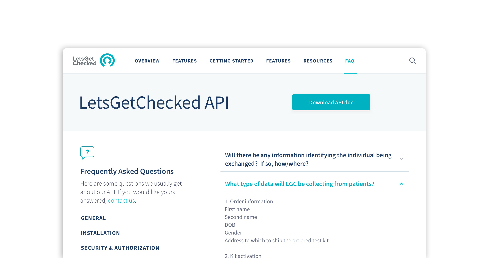
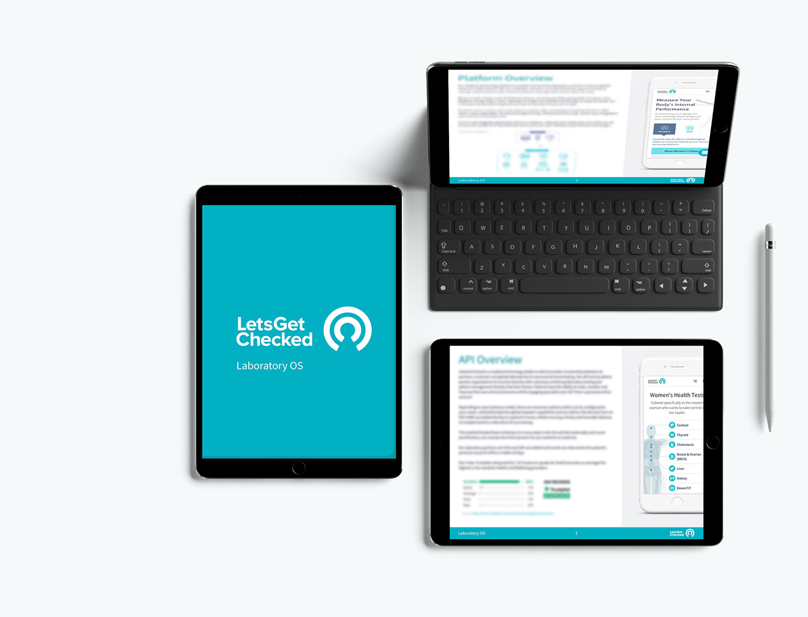
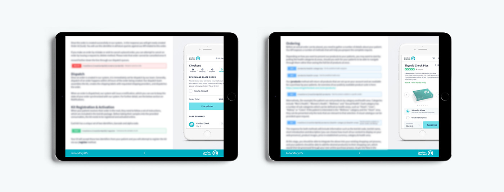
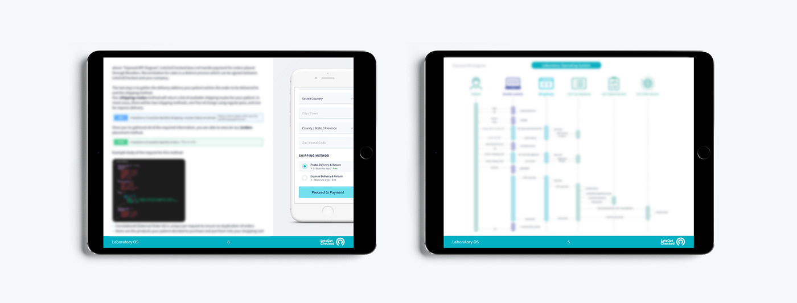

2018
API documentation
This always evolving document was done to help LetsGetChecked to help with the installation and usage of their brand new API. It includes graphs and diagrams and how to install and use their code calls, with snippets for each feature allowed in this version.
I also created mockups representing each one of the calls.



